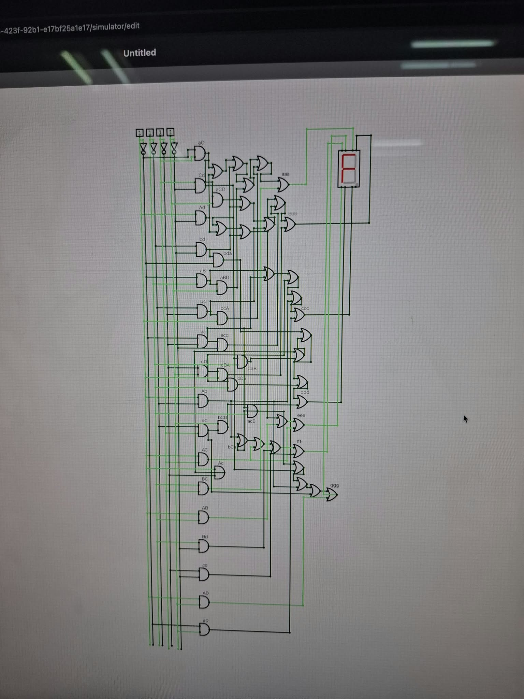
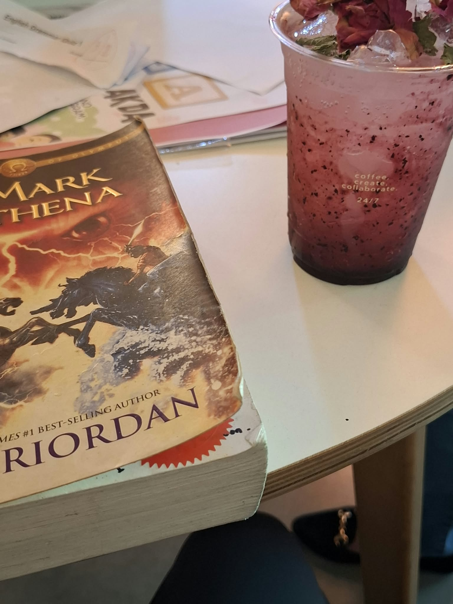

Who I Am
I enjoy exploring how code and creative design can solve real-world problems and create meaningful experiences.
BackgroundGet to Know Me
I am MJ, a student passionate about technology, design, and continuous learning. This portfolio presents my personal background, academic journey, interests, experiences, and future aspirations.
I enjoy exploring how code and creative design can solve real-world problems and create meaningful experiences.
Background
Currently developing skills in software development, web design, and logical problem-solving.
Education
Outside academics, I explore creative writing, design concepts, and personal projects.
Interests